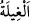

20. Onun hükümranlığını kuvvetlendirmiş, ona hikmet ve güzel konuşma
vermiştik.
Kendisine heybet, zafer ve benzeri şeyler ihsân ederek “onun hükümranlığını
kuvvetlendirmiştik.”
Kâşifî der ki: Mazlumların duâsı sebebiyle veya kendisine nasihat eden vezirleri
sâyesinde veya halka zulmü engellemesi sebebiyle veya düşmanlarının kalbine onun
korkusunu atmak sûretiyle veya zırh ve harp âletlerini keşfetmesiyle veya ordusunun
veya korumalarının çokluğuyla -ki her gece otuz altı bin kişi evinin etrafında bekçilik
ederdi- “onun hükümranlığını kuvvetlendirmiştik.” Hattâ kırkbin zırhlı neferin
Dâvûd’un muhafızlığını yaptığı; sabah olduğunda da bu askerlere ‘Allah’ın peygamberi
sizden razı olmuştur, yerlerinize dönebilirsiniz!’ denildiği rivâyet edilir.
“Allah seni insanlardan korur” (el-Mâide 5/67) âyetinin nüzûlüne kadar bizim
Peygamberimiz de korunurdu. Sultanların seferde ve hazarda muhâfız edinmesi buraya
dayanır. Bu muhâfızlar sultanları korumağa geceleyin de devam ederler ki bunun da
ecrini alacaklardır.
İbn Abbas (r.a.) der ki: Bir kimse birisi hakkında “Benim sığırımı çaldı” diye bir
iddiâda bulunmuş, fakat delil getirememiş. Allah da Dâvûd’a çaldığı iddiâ edilen kişiyi
“öldür” diye vahyetmiş. O da durumu adama bildirince, adam şöyle demiş: “Doğru
söylüyorsun, ey Allah peygamberi! Allah beni bu çalma suçundan dolayı değil, bu
adamın babasını hîleyle bir yere götürmek sûretiyle öldürmüş olduğum için
cezâlandırıyor.” Bu itiraftan sonra Dâvûd (a.s.) adamı katlettirmiş; bunu duyan insanlar
da “Herhangi biri bir günah işlediği zaman, Allah bunu ona bildiriyor” diye düşünerek
ondan korkmağa başlamışlar ve böylece insanların gönüllerine salmış olduğu heybet
daha da artmış.
Bu rivâyetteki (
) kelimesi, birine tuzak kurup bir yere götürdükten sonra orada
öldürmek demektir.
“Ona hikmet”, yâni herşeyi gerçek veçhesiyle bilme ve -o şeyin amelle ilgili bir
özelliği varsa- gereğince amel etme gücü vermiştik.
Bil ki hikmet iki türlüdür: 1- Konuşulup anlatılan (mentûkun bihâ) hikmet ki bu, şerîat
ve tarikat bilgisidir. 2- Sükût geçilen, anlatılmayan (meskûtün anhâ) hikmet ki bu da
avam âlimlerin -kendileri için zararlı ve helâk edici olacağından- gerektiği şekilde
muttali olamadıkları hakikat sırlarıdır.
Nitekim bir rivâyete göre Peygamber Efendimiz (s.a.) bazı sahâbîleri birlikte Medine
sokaklarından birinden geçerken, bir kadın Allah aşkına evine gelmelerini rica etti.
İçeri girdiklerinde, etrafında çocuklarının oynamakta olduğu alevli bir ateş gördüler.
Kadın: “Ey Allah’ın Rasûlü! Allah mı kullarına daha çok acır, yoksa ben mi
çocuklarıma daha çok acırım!” dedi. Peygamber (s.a.): “Tabiî ki Allah acır, O
Erhamu’r-râhimîn’dir” cevabını verdi. Bu cevabı alan kadın şöyle dedi: “Ey Allah’ın
Rasûlü, peki sen, benim şu çocukları ateşe atabileceğimi düşünebilir misin?” Hz.
Peygamber (s.a.): “Hayır” deyince, kadın: “Öyleyse kullarına, benim şu çocuklara